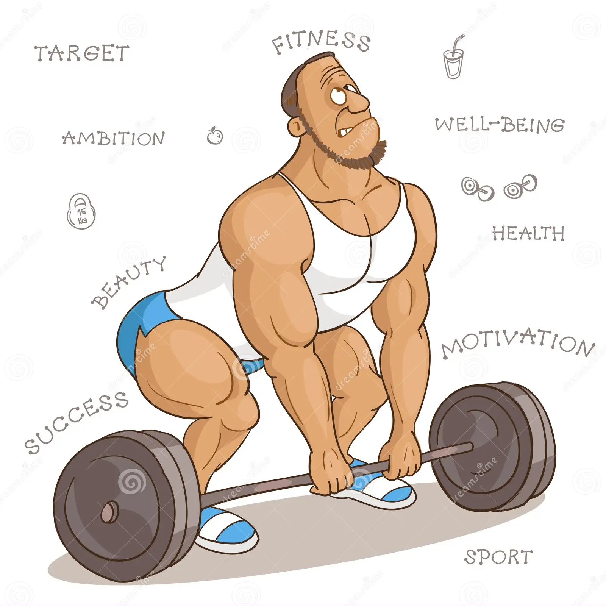

I really like to play games when I have free time. It can helps me to relax and refresh my brain. Sometimes, it even helps me distract my negative mood. My favorite type of games are those you can decide your own path and the choices are matter to the ending. I don't quite like games have only one single ending. I like to save the NPC characters by choosing a path that can changes their fates. That can makes me somehow accomplished achivements.

I enjoy planting plants into my garden using grow bags. One of the reasons is I can harvest my own fruits of labour. That's what I see in the videos of people who plant their own plants and harvest them when the harvast time comes. Although my success rate is not high. My plants often died instead of growing. The critical mistake I made is planting the plants in the wrong season. So either they got dried out, or they died in the cold season. But as I learned my mistakes, the success rate is increasing.

I want to keep my body in good shape, so I will force me to build up a workout habit to prevent my weight to go up. The progress of workout is not happy to me. As it is very tire and difficult to keep going. But when it comes to the end, I can feel that I make a right choice and have some achievements when I do made it to the end. After the workout, I can have a good meal and not worry that I might get overweight. Since I do deserve this. Keep going an never give up!